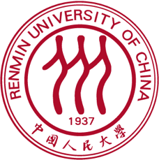
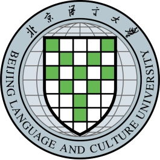
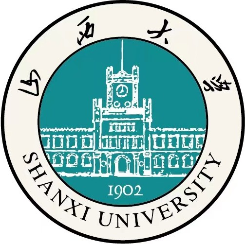
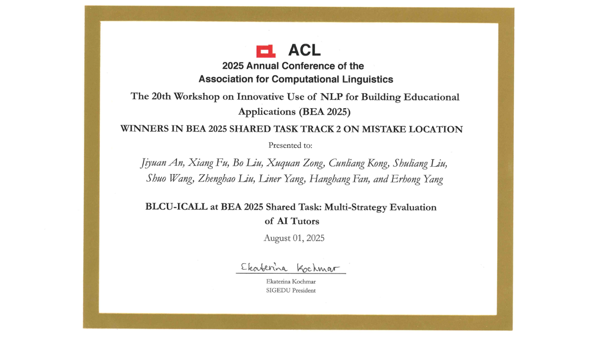
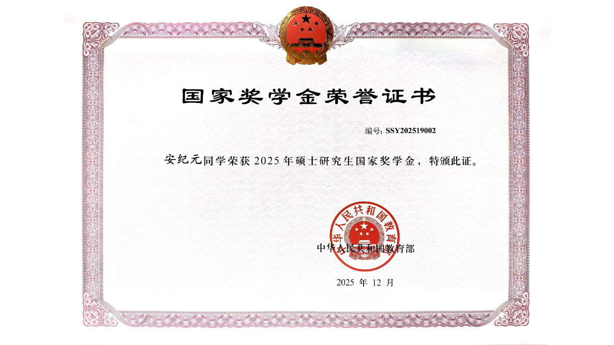
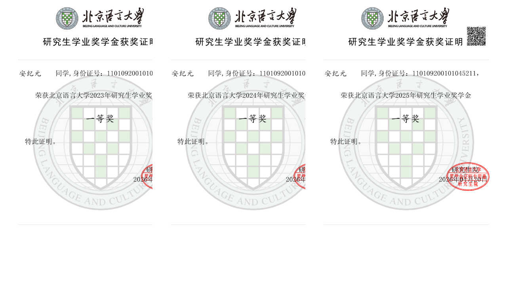
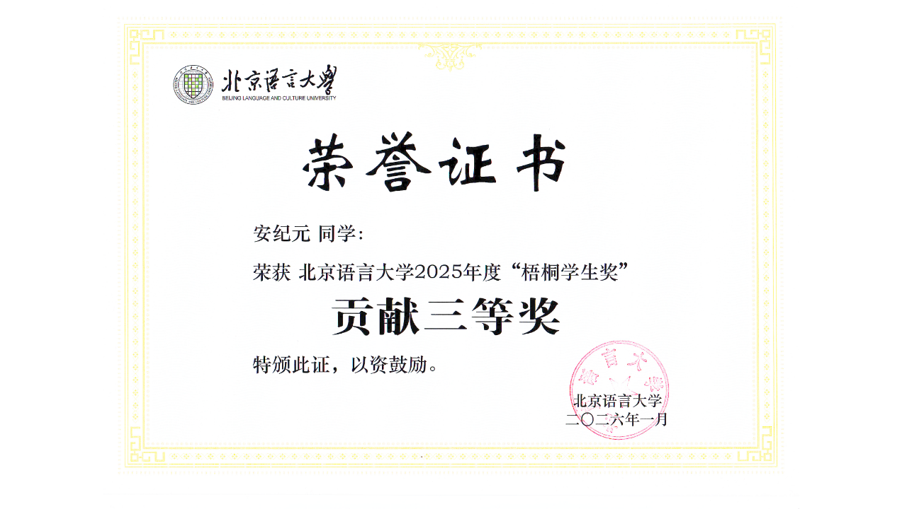
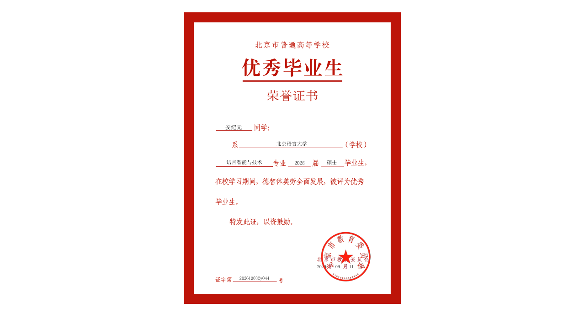
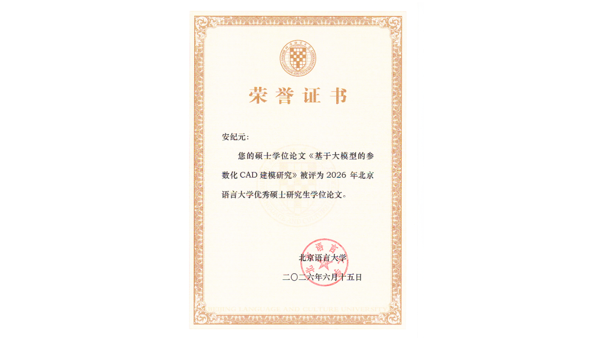

About
Jiyuan An is a Ph.D. student at the Database Systems Research Group (DBSys) at Renmin University of China, under the supervision of Assoc. Prof. Shuang Liu. His research focuses on Large Language Models & Agents, Code Generation & Testing, and AI4Science.
Education



B.S.
Shanxi University · School of Computer and Information Technology · Data Science and Big Data Technology
Advisor: Prof. Suge Wang 🔗
Research Interests
Large Language Models & Agents
LLM applications, post-training fine-tuning, agents, and interpretability
Code Generation & Testing
LLM-assisted code generation, code testing, and automation
AI4Science
Applying AI to scientific computing, data analysis, and prediction
Publications
2026
Jiyuan An, Jiachen Zhao, Fan Chen, Liner Yang, Zhenghao Liu, Hongyan Wang, Weihua An, Meishan Zhang, Erhong Yang.
PR-CAD: Progressive Refinement for Unified Controllable and Faithful Text-to-CAD Generation with Large Language Models.
arXiv, 2026.
Jiyuan An, Liner Yang, Mengyan Wang, Luming Lu, Weihua An, Erhong Yang.
From Human Cognition to Neural Activations: Probing the Computational Primitives of Spatial Reasoning in LLMs.
arXiv, 2026.
2025
Jiyuan An, Xiang Fu, Bo Liu, Xuquan Zong, Cunliang Kong, Shuliang Liu, Shuo Wang, Zhenghao Liu, Liner Yang, Hanghang Fan, Erhong Yang.
BLCU-ICALL at BEA 2025 Shared Task: Multi-Strategy Evaluation of AI Tutors.
Proceedings of the 20th Workshop on Innovative Use of NLP for Building Educational Applications (BEA 2025)
PDF
🏆 Track 2 1st Place
An, J., Zhu, L., & Yang, E. (2025).
Cross-Lingual Feedback Comment Generation for Language Learners.
Journal of Chinese Information Processing, 39(07), 148–161.
Wang, M., An, J., Yang, L., & Yang, E. (2025).
An Investigation into the Semantic Extension and Associative Patterns of the Cross-Linguistic Directional Pair "Left–Right".
Proceedings of the 24th Chinese National Conference on Computational Linguistics (CCL 2025)
Zong, X., An, J., Fu, X., Lu, L., Zhu, H., Yang, L., & Yang, E. (2025).
System Report for CCL25-Eval Task 6: Recognition of Rhetorical Devices in Primary and Secondary School Essays Based on Data Augmentation and Collaboration of Large and Small Models.
Proceedings of the 24th Chinese National Conference on Computational Linguistics (CCL 2025)
2024
An, J., Zhu, L., & Yang, E. (2024).
Cross-Lingual Feedback Comment Generation for Language Learners.
Proceedings of the 23rd Chinese National Conference on Computational Linguistics (CCL 2024), pp. 134–149.
Honors & Awards

BEA 2025 Shared Task — Track 2 1st Place
20th Workshop on Innovative Use of NLP for Building Educational Applications (ACL 2025)
August 2025

National Scholarship for Graduate Students
Ministry of Education of the People's Republic of China
November 2025

First-Class Academic Scholarship for Graduate Students, BLCU
Beijing Language and Culture University
November 2023, 2024, 2025

BLCU 2025 Wutong Student Award — Third Prize for Contribution
Beijing Language and Culture University
January 2026

Outstanding Graduate of Beijing Municipal Universities
Beijing Municipal Education Commission
June 2026

Outstanding Master's Thesis, BLCU
Beijing Language and Culture University
June 2026
Academic Service
Reviewer
- NLPCC 2025 · June 2025